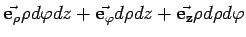

Integrationen in Vektorfeldern erfolgen meist in kartesischen, Zylinder- und Kugelkoordinaten. Oft ist über Kurven, Flächen oder Volumina zu integrieren. Die dazu erforderlichen Linien-, Flächen- und Volumenelemente sind in der folgenden Tabelle zusammengestellt.
| Kartesische Koordinaten | Zylinderkoordinaten | Kugelkoordinaten | |
|  | |||
| dv*) | dxdydz | ||
| Die Indizes i und j stehen stellvertretend für x,y,z bzw. bzw. |
|||
| *) | Für das Volumen wurde hier abweichend von der üblichen Praxis das Symbol v gewählt, um Verwechlungen mit dem Betrag des Potentials zu vermeiden. |
||